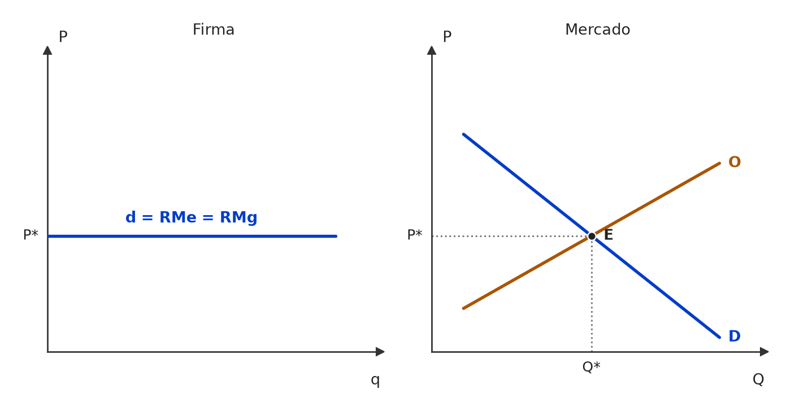
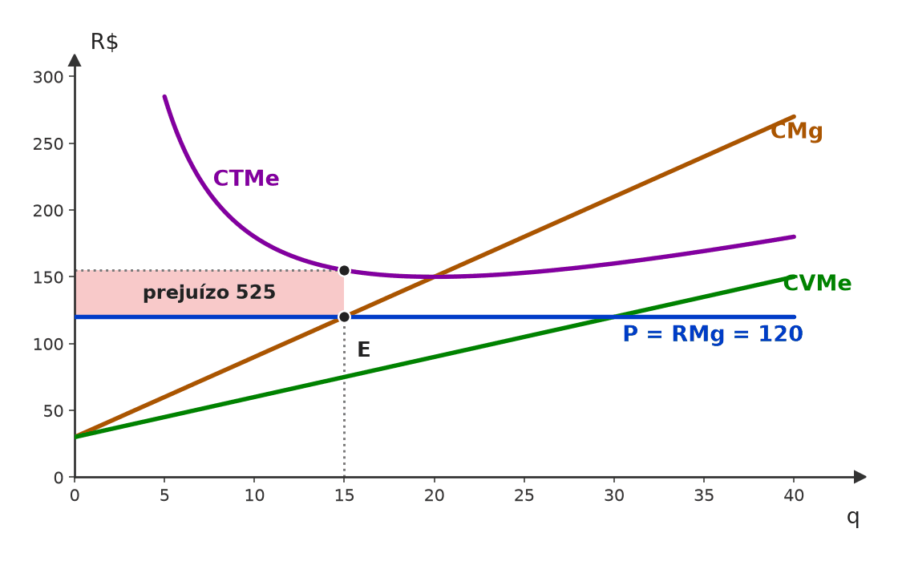
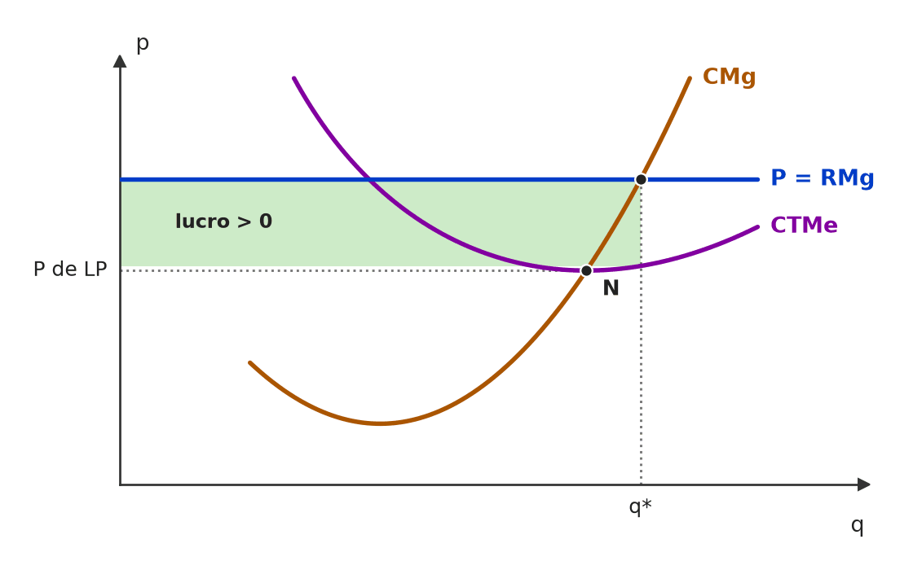
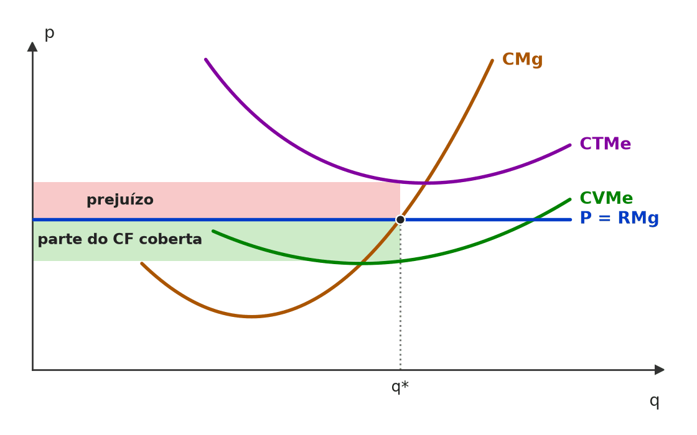
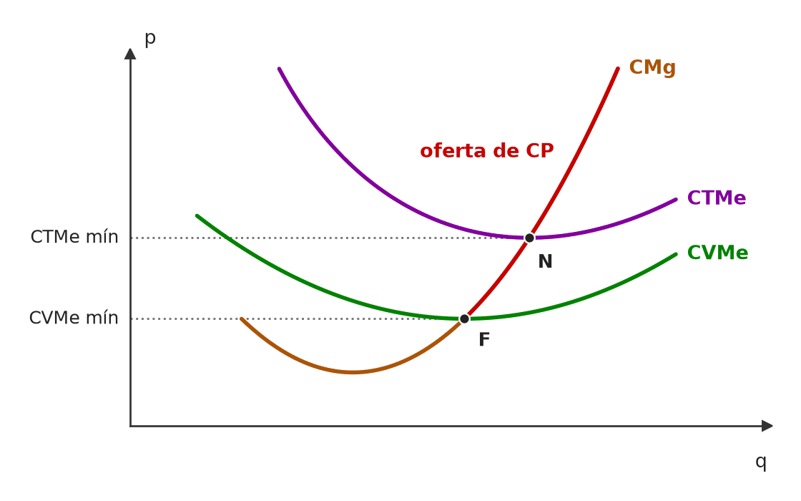
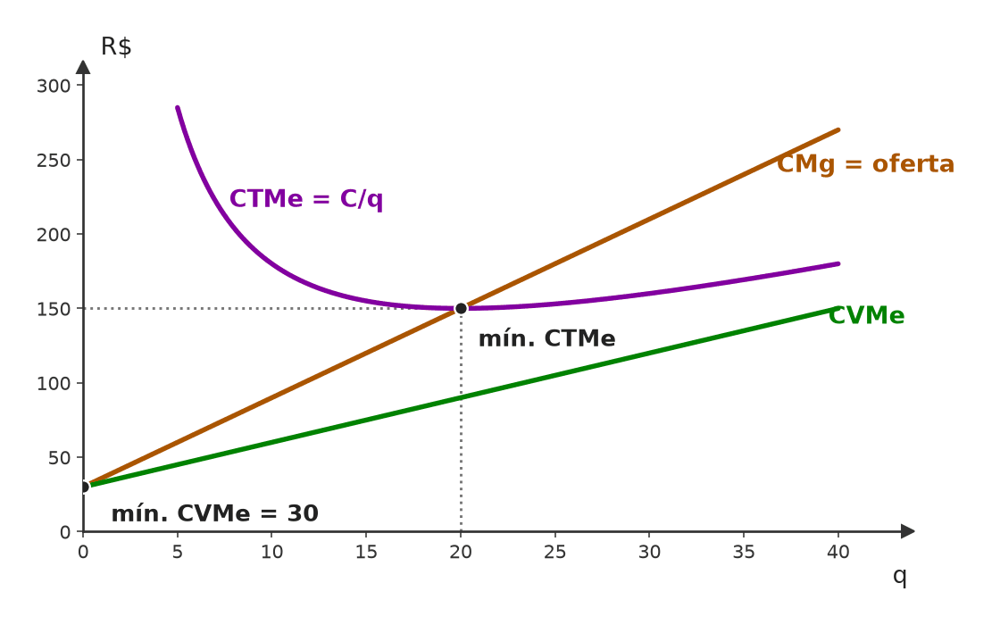
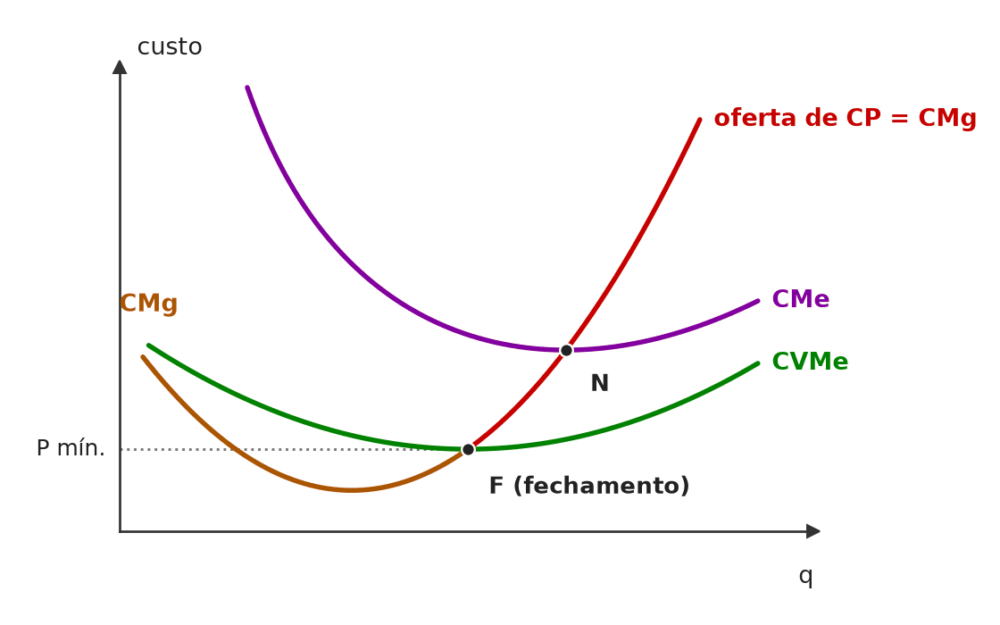
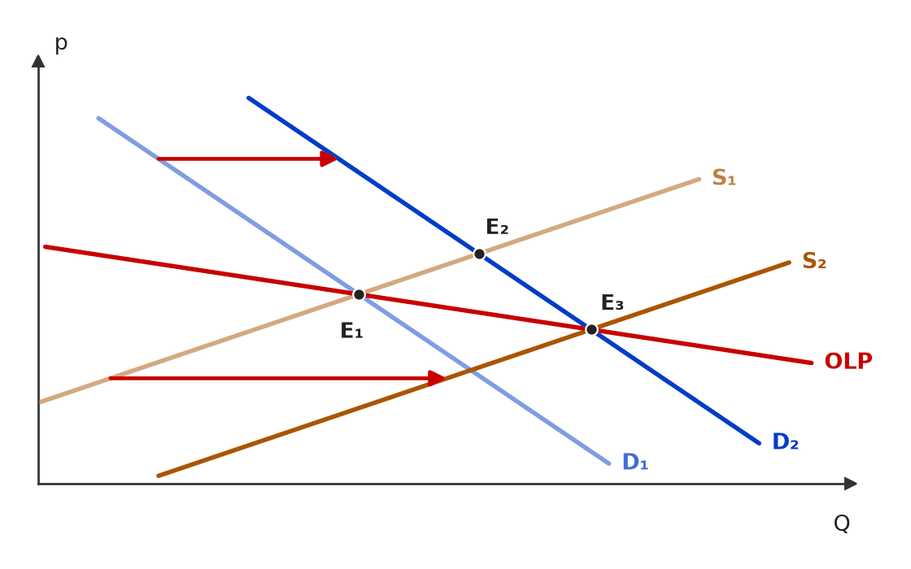

❌ [C/E - CEBRASPE › TCE/PA/2016 › Hipóteses e maximização de lucro]Acerca do mercado em concorrência perfeita, julgue o item a seguir. Item: Em um mercado em concorrência perfeita, o preço é independente da quantidade de bens produzida por uma empresa e a receita total é linear. | ✅ CERTO Em um mercado em concorrência perfeita, o preço é independente da quantidade de bens produzida por uma empresa e a receita total é linear. 🎯 Em poucas palavras: A firma é tomadora de preço: P não muda com a sua produção. Então RT = P·q é uma reta que parte da origem com inclinação P. 📖 Destrinchando o tema:
🧐 Dissecando a redação do item: [literalidade · detalhe] Duas afirmações verdadeiras encadeadas. A insegurança vem do “independente”, que parece forte demais — mas está restrito a “uma empresa”. Se dissesse “da quantidade produzida pela indústria”, seria ERRADO. 😈 Para dificultar:
|
[C/E - CEBRASPE › TCE/PA/2016 › Hipóteses e maximização de lucro]Acerca do mercado em concorrência perfeita, julgue o item a seguir. Item: A firma maximiza seus lucros quando seu preço é igual ao custo médio de produção. | ❌ ERRADO A firma maximiza seus lucros quando seu preço é igual ao custo médio de produção. 🎯 Em poucas palavras: Lucro máximo: RMg = CMg (na concorrência perfeita, P = CMg). P = custo médio é o ponto de lucro zero (nivelamento). 📖 Destrinchando o tema:
🧐 Dissecando a redação do item: [troca de conceito] Troca “marginal” por “médio”. A banca pode tornar o item CERTO com um contexto: “no equilíbrio de longo prazo em concorrência perfeita, a firma maximiza o lucro com o preço igual ao custo médio mínimo”. 😈 Para dificultar:
✍️ Reescrita correta: A firma maximiza seus lucros quando seu preço é igual ao custo marginal de produção. |
❌ [C/E - IDEG – Prof. Bozan › Pré-TPS/2026 › Hipóteses e maximização de lucro]Julgue o item a seguir, sobre a aplicação da análise de custos e receitas em mercados. Item: Em um mercado perfeitamente competitivo com alta rivalidade, a receita marginal apresenta trajetória descendente em relação à quantidade vendida. Isso ocorre porque, em um ambiente de alta concorrência, qualquer tentativa de aumentar o preço acima do mercado resultaria na perda imediata de vendas para a concorrência, forçando as empresas a venderem ao preço de equilíbrio para permanecerem competitivas. | ❌ ERRADO Em um mercado perfeitamente competitivo com alta rivalidade, a receita marginal apresenta trajetória descendente em relação à quantidade vendida. Isso ocorre porque, em um ambiente de alta concorrência, qualquer tentativa de aumentar o preço acima do mercado resultaria na perda imediata de vendas para a concorrência, forçando as empresas a venderem ao preço de equilíbrio para permanecerem competitivas. 🎯 Em poucas palavras: Na concorrência perfeita a RMg é constante e igual ao preço. A própria justificativa do item (vende-se tudo ao preço de mercado) prova isso, e não uma RMg decrescente. 📖 Destrinchando o tema:
🧐 Dissecando a redação do item: [troca de conceito · nexo indevido] A banca importa do monopólio a RMg decrescente e cola uma justificativa verdadeira, mas que leva à conclusão contrária. Pista: “forçando a vender ao preço de equilíbrio” = preço constante = RMg constante. 😈 Para dificultar:
✍️ Reescrita correta: Em um mercado perfeitamente competitivo com alta rivalidade, a receita marginal é constante e igual ao preço em relação à quantidade vendida. Isso ocorre porque […] qualquer tentativa de aumentar o preço acima do mercado resultaria na perda imediata de vendas para a concorrência, forçando as empresas a venderem ao preço de equilíbrio para permanecerem competitivas. |
[C/E - Armstrong › Pré-TPS/2026 › Hipóteses e maximização de lucro]Acerca da teoria da firma e da concorrência perfeita, julgue o item a seguir. Item: Para qualquer firma (competitiva ou não), a receita média é sempre igual ao preço, e a receita marginal é sempre igual ao preço; logo, a condição de primeira ordem para maximização de lucro reduz-se universalmente a P = CMg. | ❌ ERRADO Para qualquer firma (competitiva ou não), a receita média é sempre igual ao preço, e a receita marginal é sempre igual ao preço; logo, a condição de primeira ordem para maximização de lucro reduz-se universalmente a P = CMg. 🎯 Em poucas palavras: RMe = P vale para toda firma de preço único; RMg = P só vale para o tomador de preço. Com poder de mercado, RMg < P, e o ótimo é RMg = CMg com P > CMg. 📖 Destrinchando o tema:
🧐 Dissecando a redação do item: [modulador absoluto · meia-verdade] Os “sempre”, “qualquer” e “universalmente” estendem a todas as estruturas uma igualdade exclusiva do tomador de preço. A primeira afirmação (RMe = P) é verdadeira e funciona como isca. 😈 Para dificultar:
✍️ Reescrita correta: Para qualquer firma (competitiva ou não), a receita média é sempre igual ao preço, e a receita marginal só é igual ao preço para a firma tomadora de preço; logo, a condição de primeira ordem para maximização de lucro é RMg = CMg, que só se reduz a P = CMg na concorrência perfeita. |
[C/E - Nabuco › 2026 › Hipóteses e maximização de lucro]A respeito das estruturas de mercado, julgue (C ou E) o item a seguir. Item: Em concorrência perfeita, uma firma individual enfrenta uma curva de demanda perfeitamente elástica ao nível do preço de mercado, sendo, portanto, uma tomadora de preços. | ✅ CERTO Em concorrência perfeita, uma firma individual enfrenta uma curva de demanda perfeitamente elástica ao nível do preço de mercado, sendo, portanto, uma tomadora de preços. 🎯 Em poucas palavras: A firma é ínfima diante do mercado: vende qualquer quantidade ao preço vigente e nada acima dele. Demanda horizontal = elasticidade infinita = tomadora de preços. 📖 Destrinchando o tema:
🧐 Dissecando a redação do item: [literalidade] Definição direta. A armadilha possível seria trocar “perfeitamente elástica” por “perfeitamente inelástica” — o candidato que associa “horizontal” a “inelástica” (porque o preço não muda) erra. 😈 Para dificultar:
|
[C/E - Nabuco › 2026 › Hipóteses e maximização de lucro]A respeito das estruturas de mercado, julgue (C ou E) o item seguinte. Item: Na concorrência perfeita, a demanda da empresa individual pode ser representada por uma curva negativamente inclinada com relação aos preços. | ❌ ERRADO Na concorrência perfeita, a demanda da empresa individual pode ser representada por uma curva negativamente inclinada com relação aos preços. 🎯 Em poucas palavras: A demanda da empresa individual é horizontal (perfeitamente elástica) ao preço de mercado; negativamente inclinada é a demanda do mercado. 📖 Destrinchando o tema:
🧐 Dissecando a redação do item: [troca de conceito] Troca a demanda da firma pela do mercado. O “pode” dá ar de possibilidade, mas não há caso, dentro do modelo, em que a firma competitiva enfrente demanda inclinada. 🔥 Item recorrente nos simulados (mesmo enunciado em várias provas). 😈 Para dificultar:
✍️ Reescrita correta: Na concorrência perfeita, a demanda da empresa individual pode ser representada por uma curva perfeitamente elástica (horizontal) com relação aos preços. |
[C/E - Nabuco › 2026 › Hipóteses e maximização de lucro]A respeito das estruturas de mercado, julgue (C ou E) o item seguinte. Item: Se o mercado operar em concorrência perfeita, o custo marginal será igual à receita média no ponto ótimo. | ✅ CERTO Se o mercado operar em concorrência perfeita, o custo marginal será igual à receita média no ponto ótimo. 🎯 Em poucas palavras: Ótimo de qualquer firma: RMg = CMg. Na concorrência perfeita RMg = RMe = P; logo, no ótimo, CMg = RMe. 📖 Destrinchando o tema:
🧐 Dissecando a redação do item: [detalhe · contraintuitivo] A banca troca “receita marginal” por “receita média” para fazer o candidato desconfiar. Na concorrência perfeita a troca é inócua, porque as duas coincidem; em qualquer outra estrutura, o item seria ERRADO. 😈 Para dificultar:
|
[C/E - Clipping › Simulado 07/2023 › Hipóteses e maximização de lucro]Acerca do modelo de concorrência perfeita, julgue o item a seguir. Item: No modelo de concorrência perfeita, as empresas maximizam seus lucros ao produzir no ponto em que o preço é superior ao custo marginal de produção. | ❌ ERRADO No modelo de concorrência perfeita, as empresas maximizam seus lucros ao produzir no ponto em que o preço é superior ao custo marginal de produção. 🎯 Em poucas palavras: Tomadora de preço, a firma tem RMg = P; o lucro é máximo em P = CMg. Se P > CMg, ainda vale produzir mais. 📖 Destrinchando o tema:
🧐 Dissecando a redação do item: [troca de conceito · troca de ator] O item transplanta para a concorrência perfeita o resultado do monopólio (P > CMg). Uma só palavra — “superior” — decide o gabarito; o resto é definição correta. 😈 Para dificultar:
✍️ Reescrita correta: No modelo de concorrência perfeita, as empresas maximizam seus lucros ao produzir no ponto em que o preço é igual ao custo marginal de produção. |
[C/E - Nabuco › Pré-TPS/2023 › Hipóteses e maximização de lucro]Em relação a um mercado em concorrência perfeita, julgue (C ou E) o item a seguir. Item: Na concorrência perfeita, a demanda da empresa individual pode ser representada por uma curva negativamente inclinada com relação aos preços. | ❌ ERRADO Na concorrência perfeita, a demanda da empresa individual pode ser representada por uma curva negativamente inclinada com relação aos preços. 🎯 Em poucas palavras: O produtor competitivo vende todas as unidades ao preço P, qualquer que seja sua produção; acima de P, vende zero. Sua demanda é horizontal em P. 📖 Destrinchando o tema:
🧐 Dissecando a redação do item: [troca de conceito] Aplica à firma a curva do mercado; o “pode” suaviza, mas não salva: no modelo, a demanda da firma competitiva é sempre horizontal. 🔥 Enunciado repetido em diferentes simulados. 😈 Para dificultar:
✍️ Reescrita correta: Na concorrência perfeita, a demanda da empresa individual pode ser representada por uma curva perfeitamente elástica (horizontal) com relação aos preços. |
[C/E - Nabuco › Pré-TPS/2023 › Hipóteses e maximização de lucro]Em relação a um mercado em concorrência perfeita, julgue (C ou E) o item a seguir. Item: Se o mercado operar em concorrência perfeita, o custo marginal será igual à receita média no ponto ótimo. | ✅ CERTO Se o mercado operar em concorrência perfeita, o custo marginal será igual à receita média no ponto ótimo. 🎯 Em poucas palavras: A firma competitiva não altera o preço ao vender mais: P = RMg = RMe. Como o ótimo é RMg = CMg, segue CMg = RMe. 📖 Destrinchando o tema:
🧐 Dissecando a redação do item: [detalhe · contraintuitivo] A banca escreve “receita média” onde o candidato espera “receita marginal”, apostando no reflexo de marcar ERRADO. Na concorrência perfeita as duas coincidem. 🔥 Enunciado repetido em diferentes simulados. 😈 Para dificultar:
|
[C/E - Prof. Rodrigo Teixeira › Intensivo Pré-TPS/2023 › Hipóteses e maximização de lucro]A teoria da firma permite analisar a relação entre os custos de produção e as estruturas de mercado. A respeito desse tema, julgue o item a seguir. Item: Retornos crescentes de escala são compatíveis com estruturas de mercado competitivas e muitas firmas operando no mercado. | ❌ ERRADO Retornos crescentes de escala são compatíveis com estruturas de mercado competitivas e muitas firmas operando no mercado. 🎯 Em poucas palavras: Retornos crescentes (internos à firma) significam custo médio decrescente: a firma maior produz mais barato e tende a dominar o mercado. O resultado natural é concentração — no limite, monopólio natural —, não concorrência. 📖 Destrinchando o tema:
🧐 Dissecando a redação do item: [troca de conceito] O item atribui à concorrência uma característica de tecnologia que é a causa clássica do monopólio natural. Repare que ele não fala em economias externas: sem essa qualificação, “retornos crescentes de escala” se lê como propriedade da função de produção da firma. 😈 Para dificultar:
✍️ Reescrita correta: Retornos crescentes de escala tendem a ser incompatíveis com estruturas de mercado competitivas e muitas firmas operando no mercado, pois favorecem a concentração. |
❌ [C/E - Prof. Rodrigo Teixeira › Intensivo Pré-TPS/2023 › Hipóteses e maximização de lucro]A respeito dos conceitos e teorias da microeconomia, julgue o item a seguir. Item: Nos mercados competitivos, a demanda de mercado é totalmente elástica a preço, indicando que as firmas são tomadoras de preço. | ❌ ERRADO Nos mercados competitivos, a demanda de mercado é totalmente elástica a preço, indicando que as firmas são tomadoras de preço. 🎯 Em poucas palavras: Perfeitamente elástica (horizontal) é a demanda de cada firma. A demanda de mercado é a de sempre: negativamente inclinada. 📖 Destrinchando o tema:
🧐 Dissecando a redação do item: [troca de ator] A propriedade é verdadeira, mas pertence a outro sujeito: a firma, não o mercado. A segunda oração (tomadoras de preço) está certa e dá credibilidade à primeira. Pergunta-teste: “demanda de quem?”. 😈 Para dificultar:
✍️ Reescrita correta: Nos mercados competitivos, a demanda enfrentada por cada firma é totalmente elástica a preço, indicando que as firmas são tomadoras de preço. |
[C/E - Nabuco › Hipóteses e maximização de lucro]Em relação às estruturas de mercado, julgue (C ou E) o item que se segue. Item: Na concorrência perfeita, as curvas de demanda tanto da firma individual como da indústria são negativamente inclinadas, confirmando, em ambos os casos, que as quantidades demandadas variam inversamente aos preços de mercado. | ❌ ERRADO Na concorrência perfeita, as curvas de demanda tanto da firma individual como da indústria são negativamente inclinadas, confirmando, em ambos os casos, que as quantidades demandadas variam inversamente aos preços de mercado. 🎯 Em poucas palavras: Só a demanda da indústria é negativamente inclinada. A da firma é horizontal ao preço de mercado (perfeitamente elástica). 📖 Destrinchando o tema:
📈 No gráfico:  O mercado (à direita) tem demanda negativamente inclinada e fixa o preço P* no cruzamento com a oferta. A firma (à esquerda) toma P* como dado: sua demanda é a reta horizontal d = RMe = RMg = P*. 🧐 Dissecando a redação do item: [meia-verdade · modulador absoluto] Parte verdadeira (indústria) + parte falsa enxertada (firma), amarradas por “tanto… como” e “em ambos os casos”. 🔥 Quando o item junta firma e mercado numa só afirmação, confira cada um separadamente. 😈 Para dificultar:
✍️ Reescrita correta: Na concorrência perfeita, a curva de demanda da indústria é negativamente inclinada, e a da firma individual é horizontal, confirmando apenas no primeiro caso que as quantidades demandadas variam inversamente aos preços de mercado. |
[C/E - Banca não identificada › 2020 › Hipóteses e maximização de lucro]Considere a situação hipotética a seguir e julgue o item. Em um pequeno país, o mercado de maçãs funciona em equilíbrio sob concorrência perfeita. Em determinada data, o quilo da maçã é vendido, em todo o país, por $ 5. Considere nulos os custos de transação e os custos de menu. Item: Se um novo morador migrar para o país e não houver choques exógenos de oferta e de demanda, pagará o preço de $ 5 por quilo de maçã que adquirir. | ✅ CERTO Se um novo morador migrar para o país e não houver choques exógenos de oferta e de demanda, pagará o preço de $ 5 por quilo de maçã que adquirir. 🎯 Em poucas palavras: Em concorrência perfeita, cada agente é tomador de preço: um consumidor a mais é desprezível diante do mercado e não move a demanda. Sem choques, o preço segue $ 5. 📖 Destrinchando o tema:
🧐 Dissecando a redação do item: [detalhe] A ressalva “não houver choques exógenos” blinda o item; o que se testa é a atomicidade. Quem imagina que “mais demanda → mais preço” sem pesar o tamanho do choque marca ERRADO. 😈 Para dificultar:
|
❌ [C/E - Banca não identificada › 2020 › Hipóteses e maximização de lucro]Considere a situação hipotética a seguir e julgue o item. Em um pequeno país, o mercado de maçãs funciona em equilíbrio sob concorrência perfeita. Em determinada data, o quilo da maçã é vendido, em todo o país, por $ 5. Considere nulos os custos de transação e os custos de menu. Item: Uma nova mercearia que venda maçãs no pequeno país não terá incentivos para vender as frutas por menos que $ 5 por quilo, pois obterá lucros menores do que conseguiria caso mantivesse o preço no nível de equilíbrio. | ✅ CERTO Uma nova mercearia que venda maçãs no pequeno país não terá incentivos para vender as frutas por menos que $ 5 por quilo, pois obterá lucros menores do que conseguiria caso mantivesse o preço no nível de equilíbrio. 🎯 Em poucas palavras: A firma competitiva enfrenta demanda horizontal ao preço de mercado: vende tudo o que quiser a $ 5. Baixar o preço não lhe traz um cliente a mais que já não teria — só reduz a receita e o lucro. 📖 Destrinchando o tema:
🧐 Dissecando a redação do item: [paráfrase fiel · contraintuitivo] O senso comum diz que “preço menor atrai clientes”; em concorrência perfeita, isso não vale, porque a firma já vende quanto quiser ao preço vigente. A palavra “nova” tenta sugerir estratégia de entrada com preço baixo — irrelevante aqui. 😈 Para dificultar:
|
[C/E - Banca não identificada › Hipóteses e maximização de lucro]Acerca do modelo de concorrência perfeita, julgue o item a seguir. Item: A consequência direta dos pressupostos de produto homogêneo, informação completa e livre entrada e saída de agentes pequenos e numerosos em um mercado de concorrência perfeita é um único preço de equilíbrio por todo o mercado do produto em questão, a menos que haja choques que possam produzir abalos temporários. | ✅ CERTO A consequência direta dos pressupostos de produto homogêneo, informação completa e livre entrada e saída de agentes pequenos e numerosos em um mercado de concorrência perfeita é um único preço de equilíbrio por todo o mercado do produto em questão, a menos que haja choques que possam produzir abalos temporários. 🎯 Em poucas palavras: Produto homogêneo + informação completa = ninguém paga mais caro por algo igual; muitos agentes pequenos = ninguém fixa preço. Resultado: lei do preço único no mercado, salvo desvios passageiros. 📖 Destrinchando o tema:
🧐 Dissecando a redação do item: [literalidade · modulador relativo] A ressalva “a menos que haja choques … temporários” protege o item contra a objeção de que preços mudam. Redação longa e imprecisa (“consequência direta”), que convida a procurar um erro inexistente. 😈 Para dificultar:
|
[C/E - Banca não identificada › Hipóteses e maximização de lucro]Acerca da maximização de lucro pela firma, julgue o item a seguir. Item: Em um mercado em que há muitos produtores e muitos consumidores de tal modo que um produtor isoladamente não pode fixar o preço de seu produto, é a igualdade entre receita e custo marginais que determinará a quantidade que o produtor deverá produzir para maximizar o lucro. | ✅ CERTO Em um mercado em que há muitos produtores e muitos consumidores de tal modo que um produtor isoladamente não pode fixar o preço de seu produto, é a igualdade entre receita e custo marginais que determinará a quantidade que o produtor deverá produzir para maximizar o lucro. 🎯 Em poucas palavras: Lucro máximo em RMg = CMg — regra de qualquer estrutura. Para o tomador de preço, RMg = P, e a regra vira P = CMg. 📖 Destrinchando o tema:
🧐 Dissecando a redação do item: [literalidade · paráfrase fiel] Definição de manual, descrita por perífrase (“muitos produtores … não pode fixar o preço”). Quem espera ver “preço = custo marginal” pode estranhar “receita marginal” e marcar ERRADO — mas, para o tomador de preço, as duas formulações são equivalentes. 😈 Para dificultar:
|
❌ [C/E - Banca não identificada › Hipóteses e maximização de lucro]Acerca das características dos mercados competitivos, julgue o item a seguir. Item: Uma das características de um mercado competitivo ou de concorrência perfeita é a homogeneidade do produto, ainda que as marcas acentuem diferenças nas qualidades do produto; nesse caso, os consumidores irão preferir marcas de menor preço. | ❌ ERRADO Uma das características de um mercado competitivo ou de concorrência perfeita é a homogeneidade do produto, ainda que as marcas acentuem diferenças nas qualidades do produto; nesse caso, os consumidores irão preferir marcas de menor preço. 🎯 Em poucas palavras: Homogeneidade significa que não há diferença de qualidade percebida entre vendedores. Se as marcas acentuam diferenças, o produto deixou de ser homogêneo — já é concorrência monopolística. 📖 Destrinchando o tema:
🧐 Dissecando a redação do item: [meia-verdade · contradição] A 1ª oração é a hipótese correta; o erro foi enxertado no “ainda que”, que acrescenta uma condição que destrói a própria homogeneidade. O “nesse caso…” fecha com um desfecho plausível, para dar ar de consequência lógica. 😈 Para dificultar:
✍️ Reescrita correta: Uma das características de um mercado competitivo ou de concorrência perfeita é a homogeneidade do produto, sem diferenças de qualidade entre as marcas; por isso, vigora um preço único, e nenhuma firma pode cobrar acima dele sem perder seus clientes. |
[C/E - Banca não identificada › Hipóteses e maximização de lucro]Acerca dos conceitos de receita da firma, julgue o item a seguir. Item: A receita marginal é a mudança na receita total dividida pela mudança no produto total. | ✅ CERTO A receita marginal é a mudança na receita total dividida pela mudança no produto total. 🎯 Em poucas palavras: Receita marginal = ΔRT/ΔQ (no limite, dRT/dQ): quanto a receita total varia por unidade adicional vendida. 📖 Destrinchando o tema:
🧐 Dissecando a redação do item: [literalidade] Definição pura. A versão ERRADA costuma inverter a razão (“mudança no produto dividida pela mudança na receita”) ou trocar o numerador pela receita média. 😈 Para dificultar:
|
[C/E - Banca não identificada › Hipóteses e maximização de lucro]Acerca do modelo de concorrência perfeita, julgue o item a seguir. Item: Se a natureza do produto requer que produtores usem grandes quantidades de maquinário e equipamento especializado, então a indústria não se adequa às hipóteses de competição perfeita. | ✅ CERTO Se a natureza do produto requer que produtores usem grandes quantidades de maquinário e equipamento especializado, então a indústria não se adequa às hipóteses de competição perfeita. 🎯 Em poucas palavras: Capital fixo grande e específico cria custos irrecuperáveis e economias de escala: a entrada e a saída deixam de ser livres e o número de firmas tende a ser pequeno. 📖 Destrinchando o tema:
🧐 Dissecando a redação do item: [detalhe · contraintuitivo] O item não cita nenhuma das hipóteses pelo nome: exige que o candidato derive, do tipo de capital, a violação da livre entrada e da atomicidade. A palavra decisiva é “especializado” (custo afundado). 😈 Para dificultar:
|
[C/E - Banca não identificada › Hipóteses e maximização de lucro]Acerca do modelo de concorrência perfeita, julgue o item a seguir. Item: No modelo de concorrência perfeita, o equilíbrio geral se dá, dentre outras condições, na capacidade das firmas estabelecerem seus preços. | ❌ ERRADO No modelo de concorrência perfeita, o equilíbrio geral se dá, dentre outras condições, na capacidade das firmas estabelecerem seus preços. 🎯 Em poucas palavras: Em concorrência perfeita as firmas são tomadoras de preço (price takers): o preço sai da interação de oferta e demanda, e nenhuma firma isolada o fixa. 📖 Destrinchando o tema:
🧐 Dissecando a redação do item: [inversão] Troca “tomar” por “estabelecer” preços — exatamente o oposto da hipótese. O “dentre outras condições” dá ar de lista técnica e disfarça a inversão. 😈 Para dificultar:
✍️ Reescrita correta: No modelo de concorrência perfeita, o equilíbrio geral se dá, dentre outras condições, com firmas tomadoras de preço, incapazes de estabelecer seus preços. |
[C/E - Banca não identificada › Hipóteses e maximização de lucro]Acerca do modelo de concorrência perfeita, julgue o item a seguir. Item: Na concorrência perfeita, o equilíbrio geral se dá, dentre outras condições, na necessidade da observância de equilíbrio no mercado de trabalho, quando demanda e oferta de trabalho se igualam. | ✅ CERTO Na concorrência perfeita, o equilíbrio geral se dá, dentre outras condições, na necessidade da observância de equilíbrio no mercado de trabalho, quando demanda e oferta de trabalho se igualam. 🎯 Em poucas palavras: Equilíbrio geral = todos os mercados equilibrados ao mesmo tempo, inclusive os de fatores. O de trabalho é um deles: oferta = demanda de trabalho ao salário real de equilíbrio. 📖 Destrinchando o tema:
🧐 Dissecando a redação do item: [literalidade · detalhe] O item amplia o foco para além do mercado do bem; quem pensa só em equilíbrio parcial estranha a menção ao trabalho e marca ERRADO. A redação truncada (“na necessidade da observância”) é ruído, não erro. 😈 Para dificultar:
|
[C/E - Banca não identificada › Hipóteses e maximização de lucro]Acerca do modelo de concorrência perfeita, julgue o item a seguir. Item: Em um mercado de concorrência perfeita, a maximização do lucro de uma dada empresa ocorre sob a mesma condição de igualdade entre o custo marginal e o custo médio. | ❌ ERRADO Em um mercado de concorrência perfeita, a maximização do lucro de uma dada empresa ocorre sob a mesma condição de igualdade entre o custo marginal e o custo médio. 🎯 Em poucas palavras: Lucro máximo: RMg = CMg (na concorrência perfeita, P = CMg). CMg = CMe marca o mínimo do custo médio — condição de eficiência produtiva, não de lucro máximo. 📖 Destrinchando o tema:
🧐 Dissecando a redação do item: [troca de conceito] Troca a condição de lucro máximo (RMg = CMg) pela de custo médio mínimo (CMg = CMe), aproveitando que as duas se cruzam no equilíbrio de longo prazo. O “sob a mesma condição” é o gancho: “mesma” que qual? — nenhuma regra de lucro envolve o CMe. 😈 Para dificultar:
✍️ Reescrita correta: Em um mercado de concorrência perfeita, a maximização do lucro de uma dada empresa ocorre sob a mesma condição de igualdade entre o custo marginal e a receita marginal (o preço). |
[C/E - Banca não identificada › Hipóteses e maximização de lucro]Acerca do modelo de concorrência perfeita, julgue o item a seguir. Item: Em concorrência perfeita, a definição do quanto produzir de cada bem será determinada pela atuação dos consumidores e dos produtores no mercado com os ajustamentos dados pelo sistema de preços. | ✅ CERTO Em concorrência perfeita, a definição do quanto produzir de cada bem será determinada pela atuação dos consumidores e dos produtores no mercado com os ajustamentos dados pelo sistema de preços. 🎯 Em poucas palavras: Na economia de mercado competitiva, o sistema de preços coordena descentralizadamente o que e quanto produzir: preços sobem onde há escassez e caem onde há excesso, e produtores e consumidores reagem. 📖 Destrinchando o tema:
🧐 Dissecando a redação do item: [literalidade · paráfrase fiel] Item de fundamentos, sem armadilha técnica. A versão ERRADA atribuiria a decisão a um agente único (“será determinada pelo governo” ou “pelas firmas, que fixam os preços”). 😈 Para dificultar:
|
[C/E - Banca não identificada › Hipóteses e maximização de lucro]Acerca do modelo de concorrência perfeita, julgue o item a seguir. Item: Firmas em competição perfeita não têm economias de escala como um fator dominante. | ✅ CERTO Firmas em competição perfeita não têm economias de escala como um fator dominante. 🎯 Em poucas palavras: Se as economias de escala dominassem, a firma maior teria custo menor e expulsaria as demais — a atomicidade desapareceria. Concorrência perfeita pressupõe escala mínima eficiente pequena em relação ao mercado. 📖 Destrinchando o tema:
🧐 Dissecando a redação do item: [modulador relativo · detalhe] O “como um fator dominante” é o que torna o item verdadeiro: não se nega que existam economias de escala, só que prevaleçam. A versão ERRADA tiraria o modulador (“não têm economias de escala”) ou diria que elas são compatíveis com atomicidade em qualquer nível. 😈 Para dificultar:
|
[C/E - Banca não identificada › Hipóteses e maximização de lucro]Acerca do modelo de concorrência perfeita, julgue o item a seguir. Item: Firmas em um mercado competitivo não podem influenciar a quantidade do bem que é produzida. | ❌ ERRADO Firmas em um mercado competitivo não podem influenciar a quantidade do bem que é produzida. 🎯 Em poucas palavras: A firma competitiva não influencia o preço, mas escolhe livremente a quantidade que produz — aquela em que P = CMg. 📖 Destrinchando o tema:
🧐 Dissecando a redação do item: [troca de conceito] Troca preço por quantidade. A frase lembra a definição de tomador de preço e por isso soa familiar; quem lê rápido marca CERTO. Leitura rigorosa: a firma controla a quantidade que ela produz, e é isso que o item nega. 😈 Para dificultar:
✍️ Reescrita correta: Firmas em um mercado competitivo não podem influenciar o preço do bem, mas escolhem a quantidade que produzem. |
[C/E - Banca não identificada › Hipóteses e maximização de lucro]Julgue o item a seguir, relativo ao mercado em concorrência perfeita. Item: Em condições de competição perfeita, se houver o aumento da demanda por parte de um comprador, o preço de mercado permanece inalterado. | ✅ CERTO Em condições de competição perfeita, se houver o aumento da demanda por parte de um comprador, o preço de mercado permanece inalterado. 🎯 Em poucas palavras: Na concorrência perfeita cada comprador é atomizado: sua demanda é ínfima diante do mercado, e uma variação individual não desloca de modo perceptível a demanda agregada — o preço não se altera. 📖 Destrinchando o tema:
🧐 Dissecando a redação do item: [detalhe · contraintuitivo] O item depende da palavra “um”: quem lê “aumento da demanda” pensa logo em deslocamento da curva e preço maior. A pista está no sujeito individual, que, por hipótese, não tem peso no mercado. 😈 Para dificultar:
|
[C/E - Banca não identificada › Hipóteses e maximização de lucro]Julgue o item a seguir, relativo ao mercado em concorrência perfeita. Item: Na concorrência perfeita o preço é determinado pela interação entre oferta e demanda. | ✅ CERTO Na concorrência perfeita o preço é determinado pela interação entre oferta e demanda. 🎯 Em poucas palavras: Nenhum agente fixa o preço: ele resulta do equilíbrio de mercado, onde a oferta da indústria cruza a demanda de mercado. 📖 Destrinchando o tema:
🧐 Dissecando a redação do item: [literalidade] Definição de manual, sem pegadinha. O risco é o candidato desconfiar do óbvio por lembrar que “a firma não determina o preço” — e é justamente por isso que quem o determina é o mercado. 😈 Para dificultar:
|
[C/E - Banca não identificada › Hipóteses e maximização de lucro]Julgue o item a seguir, relativo ao mercado em concorrência perfeita. Item: Na concorrência perfeita, a curva de demanda individual é uma reta inclinada. | ❌ ERRADO Na concorrência perfeita, a curva de demanda individual é uma reta inclinada. 🎯 Em poucas palavras: A demanda que a firma individual enfrenta é horizontal ao preço de mercado (perfeitamente elástica): ela vende o quanto quiser a P e nada acima de P. 📖 Destrinchando o tema:
🧐 Dissecando a redação do item: [troca de conceito] O item aplica à firma o formato da demanda de mercado. 🔥 Tema recorrente: a banca alterna “firma” e “mercado” no mesmo bloco de itens, e o gabarito muda só com essa palavra. 😈 Para dificultar:
✍️ Reescrita correta: Na concorrência perfeita, a curva de demanda individual da firma é uma reta horizontal, ao nível do preço de mercado. |
[C/E - Banca não identificada › Hipóteses e maximização de lucro]Julgue o item a seguir, relativo ao mercado em concorrência perfeita. Item: Na concorrência perfeita a curva de demanda do mercado é uma reta negativamente inclinada. | ✅ CERTO Na concorrência perfeita a curva de demanda do mercado é uma reta negativamente inclinada. 🎯 Em poucas palavras: A demanda de mercado é a soma horizontal das demandas individuais dos consumidores e segue a lei da demanda: preço maior, quantidade demandada menor. 📖 Destrinchando o tema:
🧐 Dissecando a redação do item: [detalhe] A palavra decisiva é “do mercado”. Se fosse “da firma”, o item seria ERRADO. O “reta” não é usado como armadilha: é a representação de manual. 😈 Para dificultar:
|
[C/E - Banca não identificada › Hipóteses e maximização de lucro]Julgue o item a seguir, relativo ao mercado em concorrência perfeita. Item: Na concorrência perfeita, as curvas de demanda de Receita Média (RMe) e da Receita Marginal (RMg) se equivalem, são horizontais e iguais ao Preço. | ✅ CERTO Na concorrência perfeita, as curvas de demanda de Receita Média (RMe) e da Receita Marginal (RMg) se equivalem, são horizontais e iguais ao Preço. 🎯 Em poucas palavras: Com P constante para a firma, RT = P·q: RMe = RT/q = P e RMg = ΔRT/Δq = P. As três curvas (demanda da firma, RMe e RMg) são a mesma reta horizontal. 📖 Destrinchando o tema:
🧐 Dissecando a redação do item: [literalidade] Reproduz a identidade de manual. O que derruba candidatos é levar a regra do monopólio (RMg abaixo da RMe) para o mercado competitivo. 😈 Para dificultar:
|
[C/E - FCC › Prefeitura de Santos/2005 › Curto prazo: oferta da firma]Acerca da firma em concorrência perfeita, julgue o item a seguir. Item: Uma empresa com rendimentos constantes de escala necessariamente apresenta uma curva de oferta de curto prazo horizontal. | ❌ ERRADO Uma empresa com rendimentos constantes de escala necessariamente apresenta uma curva de oferta de curto prazo horizontal. 🎯 Em poucas palavras: Rendimento de escala é conceito de longo prazo. No curto prazo há fator fixo, valem os rendimentos marginais decrescentes, o CMg sobe — e a oferta de curto prazo é crescente. 📖 Destrinchando o tema:
🧐 Dissecando a redação do item: [anacronismo · modulador absoluto] Aplica ao curto prazo uma propriedade de longo prazo e a reforça com “necessariamente”. Pista: “escala” + “curto prazo” na mesma frase quase sempre é erro de horizonte. 😈 Para dificultar:
✍️ Reescrita correta: Uma empresa com rendimentos constantes de escala apresenta, no curto prazo, uma curva de oferta positivamente inclinada (CMg crescente, por rendimentos marginais decrescentes). |
[C/E - FCC › Prefeitura de Santos/2005 › Curto prazo: oferta da firma]Acerca da firma em concorrência perfeita, julgue o item a seguir. Item: Uma firma nunca deve operar caso o preço de seu produto seja inferior ao seu custo médio de produção. | ❌ ERRADO Uma firma nunca deve operar caso o preço de seu produto seja inferior ao seu custo médio de produção. 🎯 Em poucas palavras: No curto prazo, a firma opera com P abaixo do custo médio (total) desde que P ≥ CVMe: o “nunca” ignora esse caso. 📖 Destrinchando o tema:
🧐 Dissecando a redação do item: [modulador absoluto · troca de conceito] “Nunca” sem horizonte temporal + “custo médio” no lugar de “custo variável médio”. A afirmação só vale no longo prazo; o absoluto a estende ao curto, onde é falsa. 😈 Para dificultar:
✍️ Reescrita correta: Uma firma não deve operar no curto prazo caso o preço de seu produto seja inferior ao seu custo variável médio de produção. |
[C/E - FCC › Prefeitura de Santos/2005 › Curto prazo: oferta da firma]Acerca da firma em concorrência perfeita, julgue o item a seguir. Item: A curva de oferta da firma é dada pelo ramo ascendente da curva de custo variável médio acima do ponto de cruzamento dessa curva com a curva de custo marginal. | ❌ ERRADO A curva de oferta da firma é dada pelo ramo ascendente da curva de custo variável médio acima do ponto de cruzamento dessa curva com a curva de custo marginal. 🎯 Em poucas palavras: É o contrário: a oferta é o ramo ascendente do CMg acima do cruzamento com o CVMe (no mínimo deste). O CVMe não é curva de oferta. 📖 Destrinchando o tema:
🧐 Dissecando a redação do item: [inversão] Troca de papéis entre as duas curvas: o item põe o CVMe como oferta e o CMg como limite. Pista: oferta vem sempre da curva “marginal”, nunca da “média”. 😈 Para dificultar:
✍️ Reescrita correta: A curva de oferta da firma é dada pelo ramo ascendente da curva de custo marginal acima do ponto de cruzamento dessa curva com a curva de custo variável médio. |
[C/E - Armstrong › Pré-TPS/2026 › Curto prazo: oferta da firma]Acerca da teoria da firma e da concorrência perfeita, julgue o item a seguir. Item: Em um mercado perfeitamente competitivo com firmas idênticas, considere um choque negativo de demanda que reduz o preço de P0 para P1. Se P1 < CTM, toda firma sai imediatamente do mercado; se CVM < P1 < CTM, as firmas seguem produzindo no curto prazo, e a curva de oferta de cada firma no curto prazo é o trecho do CMg acima do CTM. No longo prazo, com livre entrada e saída, o equilíbrio requer P = CMg = CTM no mínimo do CTM (escala eficiente), e o lucro econômico é nulo. | ❌ ERRADO Em um mercado perfeitamente competitivo com firmas idênticas, considere um choque negativo de demanda que reduz o preço de P0 para P1. Se P1 < CTM, toda firma sai imediatamente do mercado; se CVM < P1 < CTM, as firmas seguem produzindo no curto prazo, e a curva de oferta de cada firma no curto prazo é o trecho do CMg acima do CTM. No longo prazo, com livre entrada e saída, o equilíbrio requer P = CMg = CTM no mínimo do CTM (escala eficiente), e o lucro econômico é nulo. 🎯 Em poucas palavras: Dois erros no curto prazo: P < CTM não faz a firma sair imediatamente (no curto prazo ela só para se P < CVM), e a oferta de curto prazo é o CMg acima do mínimo do CVM, não do CTM. A parte de longo prazo está certa. 📖 Destrinchando o tema:
🧐 Dissecando a redação do item: [troca de conceito · meia-verdade] Item longo, com a última frase impecável para dar credibilidade. O erro está na troca CVM → CTM em dois lugares do curto prazo e no “imediatamente”, que mistura paralisação (curto prazo) com saída (longo prazo). 😈 Para dificultar:
✍️ Reescrita correta: […] Se P1 < CVM, toda firma paralisa a produção no curto prazo; se CVM < P1 < CTM, as firmas seguem produzindo no curto prazo, e a curva de oferta de cada firma no curto prazo é o trecho do CMg acima do mínimo do CVM. No longo prazo, com livre entrada e saída, o equilíbrio requer P = CMg = CTM no mínimo do CTM (escala eficiente), e o lucro econômico é nulo. |
[C/E - Nabuco › 2026 › Curto prazo: oferta da firma]Em relação à teoria microeconômica, julgue (C ou E) o item a seguir. Item: Os custos fixos de empresas que operam em concorrência perfeita no curto prazo são irrelevantes para a decisão de continuarem produzindo, pois só se produz quando o preço é superior ao custo total médio. | ❌ ERRADO Os custos fixos de empresas que operam em concorrência perfeita no curto prazo são irrelevantes para a decisão de continuarem produzindo, pois só se produz quando o preço é superior ao custo total médio. 🎯 Em poucas palavras: A premissa está certa (custo fixo é irrecuperável no curto prazo); a justificativa, errada: a firma produz se P ≥ CVMe, ainda que P < CTMe. 📖 Destrinchando o tema:
🧐 Dissecando a redação do item: [meia-verdade · troca de conceito] 1ª oração correta; o erro foi enxertado no “pois”, que traz o critério de longo prazo. Pista: a justificativa contradiz a premissa, porque o CTMe embute o custo fixo que se disse irrelevante. 😈 Para dificultar:
✍️ Reescrita correta: Os custos fixos de empresas que operam em concorrência perfeita no curto prazo são irrelevantes para a decisão de continuarem produzindo, pois só se produz quando o preço é superior ao custo variável médio. |
[C/E - Nabuco › 2026 › Curto prazo: oferta da firma]A respeito das estruturas de mercado, julgue (C ou E) o item seguinte. Item: Em um mercado de concorrência perfeita, como existem livre entrada e livre saída de empresas no mercado, o lucro de curto prazo de uma empresa nunca é negativo. | ❌ ERRADO Em um mercado de concorrência perfeita, como existem livre entrada e livre saída de empresas no mercado, o lucro de curto prazo de uma empresa nunca é negativo. 🎯 Em poucas palavras: Livre entrada e saída é ajuste de longo prazo. No curto prazo a firma pode ter prejuízo — e continua produzindo enquanto P ≥ CVMe. 📖 Destrinchando o tema:
🧐 Dissecando a redação do item: [anacronismo · modulador absoluto] O item aplica ao curto prazo um mecanismo que só opera no longo prazo (erro de horizonte temporal) e fecha com “nunca”. Pista: “lucro de curto prazo” + “livre entrada e saída” na mesma frase. 😈 Para dificultar:
✍️ Reescrita correta: Em um mercado de concorrência perfeita, embora existam livre entrada e livre saída de empresas no mercado, o lucro de curto prazo de uma empresa pode ser negativo; só no longo prazo ele tende a zero. |
[C/E - Nidi/Jacqueline Bueno › Simulado Dezembro/2024 › Curto prazo: oferta da firma]Considerando a teoria da produção e suas implicações para o equilíbrio de curto e longo prazo para empresas competitivas, julgue o item a seguir. Item: Para uma empresa competitiva, a curva de oferta no curto prazo coincide com a curva de custo marginal que estará necessariamente acima do ponto de custo variável médio mínimo, mas não necessariamente acima do custo médio mínimo total. | ✅ CERTO Para uma empresa competitiva, a curva de oferta no curto prazo coincide com a curva de custo marginal que estará necessariamente acima do ponto de custo variável médio mínimo, mas não necessariamente acima do custo médio mínimo total. 🎯 Em poucas palavras: A oferta de curto prazo é o trecho do CMg acima do CVMe mínimo (ponto de fechamento). Entre esse ponto e o CTMe mínimo, a firma produz com prejuízo — por isso a oferta não precisa estar acima do CTMe. 📖 Destrinchando o tema:
🧐 Dissecando a redação do item: [literalidade · detalhe] A redação sobrepõe dois moduladores (“necessariamente” e “não necessariamente”) para gerar dúvida, mas cada um está no lugar certo: o CVMe é piso obrigatório; o CTMe, não. É o par CERTO do item que troca o CVMe pelo CTMe. 😈 Para dificultar:
|
[C/E - Nabuco › Pré-TPS/2023 › Curto prazo: oferta da firma]Em relação a um mercado em concorrência perfeita, julgue (C ou E) o item a seguir. Item: A curva de oferta a curto prazo de uma firma em concorrência perfeita é igual à curva de custo marginal para todos os níveis de produção iguais ou maiores do que o nível de produção associado ao custo total médio mínimo. | ❌ ERRADO A curva de oferta a curto prazo de uma firma em concorrência perfeita é igual à curva de custo marginal para todos os níveis de produção iguais ou maiores do que o nível de produção associado ao custo total médio mínimo. 🎯 Em poucas palavras: No curto prazo a firma produz enquanto P ≥ CVMe. A oferta é o CMg a partir do mínimo do CVMe (fechamento), não do mínimo do CTMe (nivelamento). 📖 Destrinchando o tema:
🧐 Dissecando a redação do item: [troca de conceito] Troca CVMe por CTMe — o mesmo erro aparece em itens de várias bancas. Pista: “curto prazo” na frase pede o custo variável. 🔥 Tema recorrente. 😈 Para dificultar:
✍️ Reescrita correta: A curva de oferta a curto prazo de uma firma em concorrência perfeita é igual à curva de custo marginal para todos os níveis de produção iguais ou maiores do que o nível de produção associado ao custo variável médio mínimo. |
[C/E - Nabuco › Pré-TPS/2023 › Curto prazo: oferta da firma]Em relação a um mercado em concorrência perfeita, julgue (C ou E) o item a seguir. Item: Em um mercado de concorrência perfeita, como existem livre entrada e livre saída de empresas no mercado, o lucro de curto prazo de uma empresa nunca é negativo. | ❌ ERRADO Em um mercado de concorrência perfeita, como existem livre entrada e livre saída de empresas no mercado, o lucro de curto prazo de uma empresa nunca é negativo. 🎯 Em poucas palavras: No curto prazo há custo fixo irrecuperável: com CVMe ≤ P < CTMe a firma produz com prejuízo, porque parar custaria mais (todo o custo fixo). 📖 Destrinchando o tema:
📈 No gráfico:  Com P = 120 — acima do mínimo do CVMe (30), abaixo do mínimo do CTMe (150) —, a firma produz q = 15, onde P = CMg, e perde (155 − 120) × 15 = 525: menos que os 1.200 de custo fixo que perderia parando. Lucro de curto prazo negativo, e mesmo assim ela produz. 🧐 Dissecando a redação do item: [anacronismo · modulador absoluto] Mistura horizontes: usa um mecanismo de longo prazo (entrada e saída) para garantir um resultado de curto prazo, e fecha com o absoluto “nunca”. 🔥 O mesmo enunciado aparece em mais de um simulado. 😈 Para dificultar:
✍️ Reescrita correta: Em um mercado de concorrência perfeita, embora existam livre entrada e livre saída de empresas no mercado, o lucro de curto prazo de uma empresa pode ser negativo, desde que o preço cubra o custo variável médio. |
[C/E - Prof. Rodrigo Teixeira › Intensivo Pré-TPS/2023 › Curto prazo: oferta da firma]A respeito dos conceitos e teorias da microeconomia, julgue o item a seguir. Item: Se durante a pandemia a queda das vendas fez a receita de um restaurante cair abaixo do custo variável médio, este restaurante vai seguir operando, ainda que com prejuízo. | ❌ ERRADO Se durante a pandemia a queda das vendas fez a receita de um restaurante cair abaixo do custo variável médio, este restaurante vai seguir operando, ainda que com prejuízo. 🎯 Em poucas palavras: Receita abaixo do custo variável (P < CVMe ⇔ RT < CV) manda paralisar: operando, perderia o custo fixo mais a parte do variável não coberta. 📖 Destrinchando o tema:
🧐 Dissecando a redação do item: [troca de conceito] O item aplica a regra do “opera com prejuízo” fora da faixa em que ela vale (CVMe ≤ P < CTMe). O contexto (pandemia, restaurante) tenta induzir a resposta por empatia. A pista é “custo variável”: abaixo dele, para. 😈 Para dificultar:
✍️ Reescrita correta: Se durante a pandemia a queda das vendas fez a receita de um restaurante cair abaixo do custo variável médio, este restaurante vai paralisar as atividades no curto prazo, ainda que com prejuízo (limitado ao custo fixo). |
[C/E - Prof. Rodrigo Teixeira › Intensivo Pré-TPS/2023 › Curto prazo: oferta da firma]A respeito da teoria da firma, julgue o item a seguir. Item: Quando o preço de mercado de um bem é inferior ao seu custo variável médio, o nível de produção que minimiza as perdas é positivo e, portanto, a empresa deve continuar a fabricar esse bem. | ❌ ERRADO Quando o preço de mercado de um bem é inferior ao seu custo variável médio, o nível de produção que minimiza as perdas é positivo e, portanto, a empresa deve continuar a fabricar esse bem. 🎯 Em poucas palavras: Com P < CVMe, cada unidade produzida não paga nem o próprio custo variável: a perda mínima está em produção zero (paralisação), que limita o prejuízo ao custo fixo. 📖 Destrinchando o tema:
🧐 Dissecando a redação do item: [inversão] O item inverte a regra de fechamento: com P abaixo do CVMe, a conclusão correta é a oposta (produção zero). A frase soa plausível porque “minimizar perdas” costuma vir associado a continuar operando — o que só vale quando P está entre o CVMe e o CTMe. 😈 Para dificultar:
✍️ Reescrita correta: Quando o preço de mercado de um bem é inferior ao seu custo variável médio, o nível de produção que minimiza as perdas é zero e, portanto, a empresa deve deixar de fabricar esse bem. |
❌ [C/E - Prof. Rodrigo Teixeira › Intensivo Pré-TPS/2023 › Curto prazo: oferta da firma]A teoria da firma permite analisar a relação entre os custos de produção e as estruturas de mercado. A respeito desse tema, julgue o item a seguir. Item: Nos mercados perfeitamente competitivos, o equilíbrio da firma é obtido quando o preço se iguala ao custo marginal, condição que garante lucro zero mesmo no curto prazo. | ❌ ERRADO Nos mercados perfeitamente competitivos, o equilíbrio da firma é obtido quando o preço se iguala ao custo marginal, condição que garante lucro zero mesmo no curto prazo. 🎯 Em poucas palavras: P = CMg escolhe a quantidade que maximiza o lucro, mas não diz quanto ele é. O lucro depende de P × CTMe: no curto prazo pode ser positivo, nulo ou negativo; o lucro zero é resultado do longo prazo. 📖 Destrinchando o tema:
📈 No gráfico:  No curto prazo, P = CMg só define a quantidade (q*). Se nesse ponto o preço supera o CTMe, há lucro econômico positivo (retângulo verde); é a entrada de novas firmas, no longo prazo, que empurra o preço até o mínimo do CTMe e zera o lucro. 🧐 Dissecando a redação do item: [meia-verdade · nexo indevido] A primeira oração (P = CMg) é a condição correta; o erro foi enxertado na consequência (P = CMg não “garante” lucro algum) e no horizonte: “mesmo no curto prazo” leva para o curto prazo um resultado que só vale depois da entrada e saída de firmas. 😈 Para dificultar:
✍️ Reescrita correta: Nos mercados perfeitamente competitivos, o equilíbrio da firma é obtido quando o preço se iguala ao custo marginal, condição que maximiza o lucro, mas só leva a lucro zero no longo prazo. |
[C/E - Prof. Rodrigo Teixeira › Intensivo Pré-TPS/2023 › Curto prazo: oferta da firma]A respeito da teoria da firma, julgue o item a seguir. Item: Uma firma operando num mercado competitivo com prejuízo (lucro econômico negativo) pode estar maximizando lucros, no curto prazo, desde que o preço seja superior ao custo variável médio, já que o prejuízo seria maior se ela parasse a produção. | ✅ CERTO Uma firma operando num mercado competitivo com prejuízo (lucro econômico negativo) pode estar maximizando lucros, no curto prazo, desde que o preço seja superior ao custo variável médio, já que o prejuízo seria maior se ela parasse a produção. 🎯 Em poucas palavras: Com CVMe < P < CTMe, produzir onde P = CMg cobre todo o custo variável e parte do fixo; parada, a firma perderia o custo fixo inteiro. Maximizar lucro, aqui, é minimizar prejuízo. 📖 Destrinchando o tema:
📈 No gráfico:  Com o preço P entre o mínimo do CVMe e o mínimo do CTMe, a firma produz onde P = CMg e tem prejuízo (retângulo vermelho), mas a receita cobre todo o custo variável e parte do custo fixo (retângulo verde). Parada, perderia o custo fixo inteiro (vermelho + verde). 🧐 Dissecando a redação do item: [contraintuitivo · modulador relativo] Parece contraditório “maximizar lucro” com prejuízo — é isso que leva ao ERRADO. O item se salva pelo “pode” e pela condição correta (P > CVMe, não P > CTMe), e ainda entrega a justificativa certa no final. 😈 Para dificultar:
|
[C/E - Prof. Rodrigo Teixeira › Intensivo Pré-TPS/2023 › Curto prazo: oferta da firma]Durante a pandemia, diversos negócios, como restaurantes e lojas, optaram por fechar as portas temporariamente. Tendo em vista os determinantes microeconômicos das decisões das firmas de parar a produção ou sair do mercado, em mercados perfeitamente competitivos, julgue o item a seguir. Item: No curto prazo, se a firma se depara com uma receita total menor que seus custos totais, ela sairá do mercado, já que existe livre entrada e saída. | ❌ ERRADO No curto prazo, se a firma se depara com uma receita total menor que seus custos totais, ela sairá do mercado, já que existe livre entrada e saída. 🎯 Em poucas palavras: RT < CT é só prejuízo. No curto prazo a firma não sai: compara RT com CV e continua produzindo se RT ≥ CV, ou paralisa se RT < CV — mas segue no mercado pagando o custo fixo. 📖 Destrinchando o tema:
🧐 Dissecando a redação do item: [troca de conceito · anacronismo] O item usa o critério e o mecanismo do longo prazo (RT < CT, livre entrada e saída) para uma decisão de curto prazo. A justificativa “já que existe livre entrada e saída” é a pista: essa hipótese só atua quando o tempo permite ajustar todos os fatores. 😈 Para dificultar:
✍️ Reescrita correta: No curto prazo, se a firma se depara com uma receita total menor que seus custos totais, ela não sairá do mercado: continuará produzindo se a receita cobrir os custos variáveis, pois a saída só ocorre no longo prazo. |
[C/E - Prof. Rodrigo Teixeira › Intensivo Pré-TPS/2023 › Curto prazo: oferta da firma]Durante a pandemia, diversos negócios, como restaurantes e lojas, optaram por fechar as portas temporariamente. Tendo em vista os determinantes microeconômicos das decisões das firmas de parar a produção ou sair do mercado, em mercados perfeitamente competitivos, julgue o item a seguir. Item: No curto prazo, se a firma se depara com preço menor que o custo médio, porém maior que o custo variável médio, ela manterá a operação mesmo com prejuízos, pois o prejuízo será menor que o custo fixo que ela pagaria se parasse a operação. | ✅ CERTO No curto prazo, se a firma se depara com preço menor que o custo médio, porém maior que o custo variável médio, ela manterá a operação mesmo com prejuízos, pois o prejuízo será menor que o custo fixo que ela pagaria se parasse a operação. 🎯 Em poucas palavras: Entre o CVMe e o CTMe, cada unidade vendida paga seu custo variável e deixa uma sobra que abate o custo fixo: operar dá prejuízo menor que CF, que seria a perda com a firma parada. 📖 Destrinchando o tema:
🧐 Dissecando a redação do item: [literalidade · contraintuitivo] É a regra de decisão do livro-texto, com a faixa certa (CVMe < P < CTMe) e a justificativa certa (comparação com o custo fixo). O risco está na intuição de que prejuízo manda fechar — e em ler “custo médio” como se fosse o variável. 😈 Para dificultar:
|
❌ [C/E - Prof. Rodrigo Teixeira › Intensivo Pré-TPS/2023 › Curto prazo: oferta da firma]Durante a pandemia, diversos negócios, como restaurantes e lojas, optaram por fechar as portas temporariamente. Tendo em vista os determinantes microeconômicos das decisões das firmas de parar a produção ou sair do mercado, em mercados perfeitamente competitivos, julgue o item a seguir. Item: A curva de oferta da firma competitiva no curto prazo é a região da curva de custo marginal acima da curva de custo médio total. | ❌ ERRADO A curva de oferta da firma competitiva no curto prazo é a região da curva de custo marginal acima da curva de custo médio total. 🎯 Em poucas palavras: No curto prazo a firma produz enquanto P ≥ CVMe: a oferta é o trecho do CMg acima do mínimo do custo variável médio. O CTMe mínimo delimita a oferta de longo prazo. 📖 Destrinchando o tema:
📈 No gráfico:  A oferta de curto prazo da firma competitiva (em vermelho) é o trecho do CMg acima do mínimo do CVMe, o ponto de fechamento F. Entre F e o ponto de nivelamento N, a firma produz com prejuízo; abaixo de F, produz zero. O mínimo do CTMe só decide a saída no longo prazo. 🧐 Dissecando a redação do item: [troca de conceito] Troca uma curva de custo médio pela vizinha: o CTMe é a régua do longo prazo (saída), o CVMe a do curto prazo (fechamento). 🔥 A banca alterna CVMe × CTMe e curto × longo prazo em itens irmãos — conferir sempre os dois. 😈 Para dificultar:
✍️ Reescrita correta: A curva de oferta da firma competitiva no curto prazo é a região da curva de custo marginal acima da curva de custo variável médio. |
[C/E - Nabuco › Curto prazo: oferta da firma]Considerando os conceitos de microeconomia, julgue (C ou E) o item a seguir. Item: No curto prazo, uma firma pode continuar operando mesmo se estiver incorrendo em prejuízo, desde que a receita total cubra os custos variáveis totais. | ✅ CERTO No curto prazo, uma firma pode continuar operando mesmo se estiver incorrendo em prejuízo, desde que a receita total cubra os custos variáveis totais. 🎯 Em poucas palavras: Se RT ≥ CV (⇔ P ≥ CVMe), operar dá prejuízo menor que o custo fixo — que seria pago mesmo parando. Operar minimiza a perda. 📖 Destrinchando o tema:
🧐 Dissecando a redação do item: [contraintuitivo · literalidade] Verdadeiro e contrário ao senso comum (“com prejuízo, fecha”). A banca costuma inverter: “só continua operando se a receita cobrir os custos totais” → ERRADO. 😈 Para dificultar:
|
[C/E - Nabuco › Curto prazo: oferta da firma]Em relação às estruturas de mercado, julgue (C ou E) o item que se segue. Item: Para produzir uma quantidade q de seu produto, uma firma em concorrência perfeita tem um custo total C dado por C = 1.200 + 30q + 3q2. A respeito dessa situação hipotética, para obter a curva de oferta da firma, basta dividir por q a expressão dada para C e igualar o resultado obtido ao preço. | ❌ ERRADO Para produzir uma quantidade q de seu produto, uma firma em concorrência perfeita tem um custo total C dado por C = 1.200 + 30q + 3q2. A respeito dessa situação hipotética, para obter a curva de oferta da firma, basta dividir por q a expressão dada para C e igualar o resultado obtido ao preço. 🎯 Em poucas palavras: Dividir C por q dá o custo médio. A oferta vem de P = CMg: P = 30 + 6q (acima do mínimo do CVMe), isto é, q = (P − 30)/6. 📖 Destrinchando o tema:
📈 No gráfico:  Com CT = 1.200 + 30q + 3q², a oferta é o CMg (P = 30 + 6q), que parte do mínimo do CVMe (R$ 30). Dividir CT por q dá o CTMe, que só encontra o CMg no seu mínimo (q = 20; R$ 150): igualar P ao CTMe dá lucro zero, não a oferta. 🧐 Dissecando a redação do item: [troca de conceito] Troca custo marginal por custo médio. O “basta” sugere atalho simples; a pista é que a oferta competitiva sempre vem da derivada do custo total, não da divisão. 😈 Para dificultar:
✍️ Reescrita correta: […] para obter a curva de oferta da firma, basta derivar em relação a q a expressão dada para C e igualar o resultado obtido ao preço (P = 30 + 6q, para P acima do mínimo do custo variável médio). |
[C/E - Banca não identificada › Curto prazo: oferta da firma]Acerca do comportamento da firma em mercados competitivos, julgue o item a seguir. Item: Nos mercados competitivos, a maximização dos lucros no curto prazo, que exige que o preço seja superior ao custo médio de produção, impede uma firma de operar com perdas. | ❌ ERRADO Nos mercados competitivos, a maximização dos lucros no curto prazo, que exige que o preço seja superior ao custo médio de produção, impede uma firma de operar com perdas. 🎯 Em poucas palavras: Maximizar lucro exige P = CMg, não P > CMe. No curto prazo a firma pode operar com prejuízo, desde que P cubra o custo variável médio. 📖 Destrinchando o tema:
🧐 Dissecando a redação do item: [troca de conceito · nexo indevido] O item cria uma condição falsa para a maximização (P > CMe, que é condição de lucro positivo) e daí deduz uma consequência falsa (impossibilidade de prejuízo). A pista é o “no curto prazo”: é justamente o horizonte em que operar com perdas é racional. 😈 Para dificultar:
✍️ Reescrita correta: Nos mercados competitivos, a maximização dos lucros no curto prazo, que exige que o preço seja igual ao custo marginal, não impede uma firma de operar com perdas, desde que o preço cubra o custo variável médio. |
❌ [C/E - Banca não identificada › Curto prazo: oferta da firma]Acerca da curva de oferta da firma em mercado competitivo, julgue o item a seguir. Item: A curva de oferta de um bem representa a parcela da curva de custo marginal acima do custo médio total. | ❌ ERRADO A curva de oferta de um bem representa a parcela da curva de custo marginal acima do custo médio total. 🎯 Em poucas palavras: No curto prazo, a oferta da firma competitiva é o CMg acima do mínimo do CVMe (ponto de fechamento), não do CMe total: com P entre CVMe e CMe, ela produz com prejuízo, porque perderia mais parando. 📖 Destrinchando o tema:
📈 No gráfico:  A oferta de curto prazo (trecho vermelho) começa no ponto de fechamento F, mínimo do CVMe, e não em N, mínimo do CMe (lucro zero). Com preço entre F e N, a firma produz com prejuízo, porque a receita ainda cobre o custo variável e parte do fixo. 🧐 Dissecando a redação do item: [troca de conceito · anacronismo] O item usa a condição de longo prazo (CMe total) sem dizer o horizonte; a leitura padrão da banca é a curva de oferta de curto prazo, cuja referência é o CVMe. 🔥 A dupla fechamento (CVMe) × nivelamento (CMe) é cobrada com frequência. 😈 Para dificultar:
✍️ Reescrita correta: A curva de oferta de um bem representa a parcela da curva de custo marginal acima do mínimo do custo variável médio. |
[C/E - Banca não identificada › Curto prazo: oferta da firma]Julgue o item a seguir, relativo ao mercado em concorrência perfeita. Item: Na Concorrência Perfeita, o equilíbrio de curto prazo é alcançado ao igualar as curvas de receita e de custos. | ✅ CERTO Na Concorrência Perfeita, o equilíbrio de curto prazo é alcançado ao igualar as curvas de receita e de custos. 🎯 Em poucas palavras: Lido como o manual pretende — receita marginal = custo marginal —, o item é certo: a firma maximiza lucro onde P = RMg = CMg. ⚠️ Gabarito contestável: O item não diz quais curvas. Se forem as marginais (RMg e CMg), está certo. Se forem as totais (RT = CT) ou as médias (P = CTMe), descreve o ponto de lucro zero, que só coincide com o ótimo no equilíbrio de longo prazo. Mantém-se o CERTO da fonte, mas uma banca rigorosa poderia considerá-lo ERRADO. 📖 Destrinchando o tema:
🧐 Dissecando a redação do item: [literalidade] Formulação frouxa de uma regra de manual: o gabarito supõe curvas marginais. Na prova, desconfie de “receita e custo” sem adjetivo — a banca costuma especificar “marginal”; quando troca por “médio”, o item fica ERRADO. 😈 Para dificultar:
|
[C/E - CEBRASPE › TJ/PA/2025 › Longo prazo e entrada/saída]Em relação à teoria da produção, ao equilíbrio da firma e à economia do bem-estar, julgue o item subsecutivo. Item: Para que se alcance o equilíbrio competitivo de longo prazo, todas as empresas de um determinado setor devem registrar lucro econômico igual a zero, eliminando-se estímulos para entrada ou saída do mercado. | ✅ CERTO Para que se alcance o equilíbrio competitivo de longo prazo, todas as empresas de um determinado setor devem registrar lucro econômico igual a zero, eliminando-se estímulos para entrada ou saída do mercado. 🎯 Em poucas palavras: Equilíbrio de longo prazo = ninguém quer entrar nem sair. Isso exige lucro econômico zero: lucro positivo atrairia entrantes; prejuízo provocaria saídas. 📖 Destrinchando o tema:
🧐 Dissecando a redação do item: [literalidade · detalhe] Definição de manual. O “todas as empresas” soa como modulador absoluto, mas é exatamente o que o modelo exige: se uma só tivesse lucro econômico, haveria estímulo à entrada. A armadilha seria confundir com lucro contábil zero. 😈 Para dificultar:
|
[C/E - Armstrong › Pré-TPS/2026 › Longo prazo e entrada/saída]Acerca da teoria da firma e da concorrência perfeita, julgue o item a seguir. Item: Em uma indústria competitiva de custos crescentes (onde os preços dos insumos sobem à medida que a indústria se expande), a curva de oferta de mercado de longo prazo é positivamente inclinada. Isso implica que, para induzir um aumento na quantidade ofertada agregada no longo prazo, o preço de equilíbrio do produto deve necessariamente subir para cobrir os custos médios mínimos mais elevados das empresas. | ✅ CERTO Em uma indústria competitiva de custos crescentes (onde os preços dos insumos sobem à medida que a indústria se expande), a curva de oferta de mercado de longo prazo é positivamente inclinada. Isso implica que, para induzir um aumento na quantidade ofertada agregada no longo prazo, o preço de equilíbrio do produto deve necessariamente subir para cobrir os custos médios mínimos mais elevados das empresas. 🎯 Em poucas palavras: No longo prazo P = CTMe mínimo. Se a expansão da indústria encarece os insumos, o CTMe mínimo de todas as firmas sobe — e o preço de longo prazo também: oferta de longo prazo crescente. 📖 Destrinchando o tema:
🧐 Dissecando a redação do item: [literalidade · detalhe] Reproduz o caso de manual. O “necessariamente” assusta quem associa modulador forte a ERRADO, mas decorre da definição de indústria de custos crescentes. 🔥 A banca alterna os três casos (constante, crescente, decrescente). 😈 Para dificultar:
|
[C/E - Nabuco › 2026 › Longo prazo e entrada/saída]Sobre as estruturas de mercado, julgue (C ou E) o item seguinte. Item: No equilíbrio de longo prazo em concorrência perfeita, as firmas operam no ponto mínimo de suas curvas de custo médio de longo prazo, garantindo eficiência produtiva e lucro econômico zero. | ✅ CERTO No equilíbrio de longo prazo em concorrência perfeita, as firmas operam no ponto mínimo de suas curvas de custo médio de longo prazo, garantindo eficiência produtiva e lucro econômico zero. 🎯 Em poucas palavras: A livre entrada e saída leva o preço a P = CMg = CMeLP mínimo: lucro econômico nulo e produção ao menor custo unitário possível (eficiência produtiva). 📖 Destrinchando o tema:
🧐 Dissecando a redação do item: [literalidade] Resume o equilíbrio de longo prazo de manual. A armadilha usual nesse tema é trocar “mínimo” por “ramo decrescente” (concorrência monopolística) ou “lucro zero” por “lucro normal positivo” confundindo econômico e contábil. 😈 Para dificultar:
|
[C/E - Clipping › Simulado 07/2023 › Longo prazo e entrada/saída]Acerca do modelo de concorrência perfeita, julgue o item a seguir. Item: No modelo de concorrência perfeita, a entrada e saída de empresas é livre, o que significa que novas empresas podem entrar no mercado facilmente e as empresas existentes podem sair quando não estão obtendo lucro suficiente. | ✅ CERTO No modelo de concorrência perfeita, a entrada e saída de empresas é livre, o que significa que novas empresas podem entrar no mercado facilmente e as empresas existentes podem sair quando não estão obtendo lucro suficiente. 🎯 Em poucas palavras: Livre entrada e saída é hipótese da concorrência perfeita: sem barreiras nem custos irrecuperáveis, firmas entram quando há lucro econômico e saem quando há prejuízo. 📖 Destrinchando o tema:
🧐 Dissecando a redação do item: [literalidade · paráfrase fiel] Definição de manual, com linguagem coloquial (“facilmente”, “lucro suficiente”) que pode soar imprecisa e induzir ERRADO. A banca costuma errar o item trocando a estrutura (“no monopólio, a entrada é livre”). 😈 Para dificultar:
|
❌ [C/E - Prof. Rodrigo Teixeira › Intensivo Pré-TPS/2023 › Longo prazo e entrada/saída]A respeito da teoria da firma, julgue o item a seguir. Item: Num mercado competitivo, no longo prazo, se o setor tiver custos decrescentes, a curva de oferta será negativamente inclinada. | ✅ CERTO Num mercado competitivo, no longo prazo, se o setor tiver custos decrescentes, a curva de oferta será negativamente inclinada. 🎯 Em poucas palavras: Numa indústria de custos decrescentes, a expansão do setor barateia os custos de todas as firmas; o novo equilíbrio de longo prazo tem preço menor com quantidade maior — a oferta de longo prazo da indústria desce. 📖 Destrinchando o tema:
📈 No gráfico:  Indústria de custos decrescentes: a demanda sobe (D1 → D2) e o preço sobe no curto prazo (E2); a entrada de firmas e as economias externas baixam os custos e levam a oferta para S2. O novo equilíbrio de longo prazo (E3) tem preço menor que E1, e a oferta de longo prazo (OLP) que liga E1 a E3 é negativamente inclinada. 🧐 Dissecando a redação do item: [contraintuitivo · exceção] O item cobra a exceção à regra de que a oferta é crescente. Quem pensa na lei da oferta (ou na firma, cujo CMg é crescente) marca ERRADO. Pista: “setor” e “longo prazo” — a inclinação negativa é da oferta da indústria, nunca do CMg de curto prazo da firma. 😈 Para dificultar:
|
[C/E - Prof. Rodrigo Teixeira › Intensivo Pré-TPS/2023 › Longo prazo e entrada/saída]A respeito da teoria da firma, julgue o item a seguir. Item: Uma firma competitiva vai deixar o mercado, no longo prazo, se o seu preço for inferior ao custo médio total. | ✅ CERTO Uma firma competitiva vai deixar o mercado, no longo prazo, se o seu preço for inferior ao custo médio total. 🎯 Em poucas palavras: No longo prazo todos os custos são variáveis: se P < CTMe, a firma tem prejuízo econômico que nenhuma paralisação evita, e a saída é a única forma de zerá-lo. 📖 Destrinchando o tema:
🧐 Dissecando a redação do item: [literalidade] Reproduz a regra de saída do livro-texto. A armadilha seria trocar o horizonte: a mesma frase no curto prazo ficaria ERRADA (ali o critério é o CVMe e a decisão é paralisar, não sair). 😈 Para dificultar:
|
❌ [C/E - Prof. Rodrigo Teixeira › Intensivo Pré-TPS/2023 › Longo prazo e entrada/saída]Durante a pandemia, diversos negócios, como restaurantes e lojas, optaram por fechar as portas temporariamente. Tendo em vista os determinantes microeconômicos das decisões das firmas de parar a produção ou sair do mercado, em mercados perfeitamente competitivos, julgue o item a seguir. Item: No longo prazo, mesmo se o preço ficar abaixo do custo médio, pode ser vantajoso para a firma manter a operação se a receita for suficiente para pagar os custos fixos. | ❌ ERRADO No longo prazo, mesmo se o preço ficar abaixo do custo médio, pode ser vantajoso para a firma manter a operação se a receita for suficiente para pagar os custos fixos. 🎯 Em poucas palavras: No longo prazo não existem custos fixos: todos os fatores são ajustáveis. Com P < CTMe, a firma tem prejuízo econômico e a decisão ótima é sair. 📖 Destrinchando o tema:
🧐 Dissecando a redação do item: [anacronismo · troca de conceito] Transporta para o longo prazo um raciocínio que só faz sentido com custos fixos — e ainda troca a régua (custo fixo no lugar do variável). O “pode ser vantajoso” dá ar de prudência, mas não salva: no longo prazo, custo fixo não existe. 😈 Para dificultar:
✍️ Reescrita correta: No curto prazo, mesmo se o preço ficar abaixo do custo médio, pode ser vantajoso para a firma manter a operação se a receita for suficiente para pagar os custos variáveis. |
❌ [C/E - Banca não identificada › Longo prazo e entrada/saída]Acerca das economias de escala e da oferta de longo prazo da indústria, julgue o item a seguir. Item: A presença de substanciais economias externas de escala em determinada indústria é compatível com a existência de uma curva de oferta de longo prazo positivamente inclinada. | ❌ ERRADO A presença de substanciais economias externas de escala em determinada indústria é compatível com a existência de uma curva de oferta de longo prazo positivamente inclinada. 🎯 Em poucas palavras: Com economias externas substanciais, o custo de cada firma cai quando a indústria cresce: a oferta de longo prazo da indústria é negativamente inclinada (decrescente). 📖 Destrinchando o tema:
🧐 Dissecando a redação do item: [inversão · troca de conceito] O item inverte a inclinação típica e se apoia no reflexo “oferta sobe com o preço”. O “substanciais” é a pista: com economias externas fortes, o efeito de redução de custo domina. 🔥 Tema recorrente nas provas de comércio internacional do CACD (Krugman). 😈 Para dificultar:
✍️ Reescrita correta: A presença de substanciais economias externas de escala em determinada indústria é compatível com a existência de uma curva de oferta de longo prazo negativamente inclinada (decrescente). |